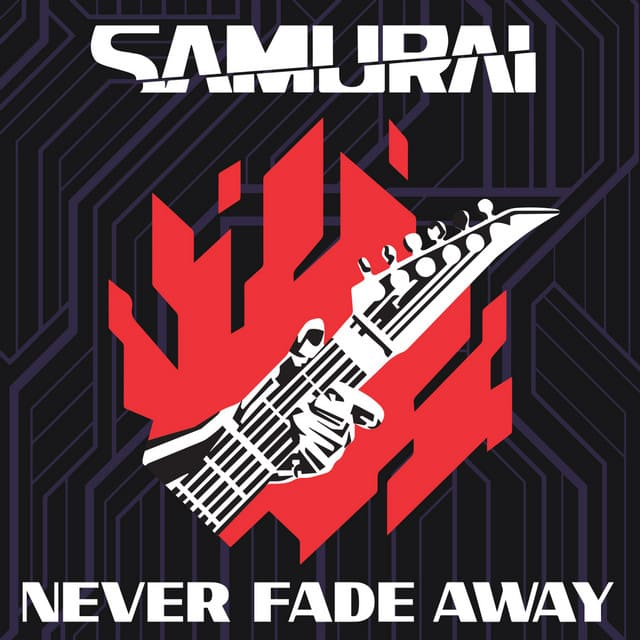

Never Fade Away
La favorita de Johnny Silverhand, el líder de Samurai. Compuesta por él luego de perder a su novia, Alt Cunningham, a manos de Arasaka, esta canción es la máxima expresión de amor que alguna vez el legendario rockero pudo dar...
Escúchala en Spotify